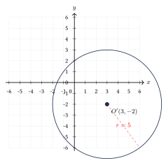
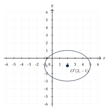

Capítulo 37
Ecuación general de segundo grado
UNAM
Todas las cónicas (circunferencia, parábola, elipse e hipérbola) pueden escribirse mediante una ecuación general de segundo grado. En este capítulo aprenderemos a identificar qué cónica representa una ecuación dada, sin necesidad de graficarla, y cómo transformarla a su forma ordinaria mediante traslación de ejes.
37.1 La ecuación general de segundo grado#
La ecuación general de segundo grado con dos variables tiene la forma \[Ax^2 + Bxy + Cy^2 + Dx + Ey + F = 0,\] donde \(A\), \(B\), \(C\), \(D\), \(E\) y \(F\) son constantes reales, y al menos uno de los coeficientes \(A\), \(B\) o \(C\) es distinto de cero.
37.2 El discriminante y la identificación de cónicas#
Al número \[I = B^2 - 4AC\] se le llama discriminante o invariante de la ecuación general de segundo grado. Permite identificar la cónica que representa.
Si \(B = 0\), la ecuación se reduce a \[Ax^2 + Cy^2 + Dx + Ey + F = 0,\] y la cónica se identifica de la siguiente manera:
| Condición | Cónica |
|---|---|
| \(A = C\) | Circunferencia |
| \(A = 0\) o \(C = 0\) (pero no ambos) | Parábola |
| \(A \neq C\), \(A\) y \(C\) del mismo signo | Elipse |
| \(A\) y \(C\) de signos opuestos | Hipérbola |
Si \(B \neq 0\), se usa el discriminante \(I = B^2 - 4AC\):
- Si \(I = 0\): la ecuación representa una parábola.
- Si \(I < 0\): la ecuación representa una elipse.
- Si \(I > 0\): la ecuación representa una hipérbola.
El discriminante no distingue entre circunferencia y elipse. Para eso hay que analizar los coeficientes: si \(A = C\) y \(B = 0\), es una circunferencia.
Identifica la cónica que representa cada ecuación: \[\text{(a) } 3x^2 + 3y^2 - 6x + 4y - 1 = 0,\] \[\text{(b) } 2x^2 + 5y^2 - 8x + 3y - 2 = 0,\] \[\text{(c) } 4x^2 - 9y^2 + 8x + 18y - 5 = 0.\]
Ver solución
- (a) \(A = 3\), \(B = 0\), \(C = 3\). Como \(A = C\) y \(B = 0\), es una circunferencia.
- (b) \(A = 2\), \(B = 0\), \(C = 5\). Como \(A \neq C\) pero ambos son del mismo signo, es una elipse.
- (c) \(A = 4\), \(B = 0\), \(C = -9\). Como \(A\) y \(C\) tienen signos opuestos, es una hipérbola.
Identifica la cónica que representa \(2x^2 - 4xy + 5y^2 - 3x + 4 = 0\).
Ver solución
Identificamos \(A = 2\), \(B = -4\), \(C = 5\). \[I = B^2 - 4AC = (-4)^2 - 4(2)(5) = 16 - 40 = -24.\] Como \(I < 0\), la ecuación representa una elipse.
Identifica la cónica que representa \(x^2 + 4xy + 4y^2 - 6x + 2y - 1 = 0\).
Ver solución
\(A = 1\), \(B = 4\), \(C = 4\). \[I = B^2 - 4AC = 16 - 4(1)(4) = 16 - 16 = 0.\] Como \(I = 0\), la ecuación representa una parábola.
Identifica la cónica que representa \(3x^2 + 2xy - 4y^2 + 5x - y + 2 = 0\).
Ver solución
\(A = 3\), \(B = 2\), \(C = -4\). \[I = B^2 - 4AC = 4 - 4(3)(-4) = 4 + 48 = 52.\] Como \(I > 0\), la ecuación representa una hipérbola.
Si \(I = 0\) pero además \(A = C = 0\) y \(B = 0\), la ecuación no es de segundo grado y no representa ninguna cónica. Siempre debe haber al menos un término cuadrático.
37.3 Traslación de ejes#
La traslación de ejes consiste en cambiar el origen del sistema de coordenadas de \(O(0, 0)\) a un nuevo origen \(O'(h, k)\), sin girar los ejes. Si \((x, y)\) son las coordenadas de un punto respecto al sistema original y \((x', y')\) son las coordenadas del mismo punto respecto al nuevo sistema, entonces: \[x = x' + h, \qquad y = y' + k.\] Equivalentemente: \[x' = x - h, \qquad y' = y - k.\]
Para transformar una ecuación general de segundo grado a su forma ordinaria, se completa el trinomio cuadrado perfecto en las variables \(x\) y \(y\). Esto equivale a trasladar los ejes al centro o vértice de la cónica.
Transforma la ecuación \(x^2 + y^2 - 6x + 4y - 12 = 0\) a su forma ordinaria e identifica la cónica.
Ver solución
Agrupamos términos: \[(x^2 - 6x) + (y^2 + 4y) = 12.\] Completamos TCP: \[(x^2 - 6x + 9) + (y^2 + 4y + 4) = 12 + 9 + 4.\] \[(x - 3)^2 + (y + 2)^2 = 25.\] Es una circunferencia con centro en \((3, -2)\) y radio \(r = 5\). La traslación de ejes lleva el origen a \(O'(3, -2)\).

Transforma la ecuación \(4x^2 + 9y^2 - 16x + 18y - 11 = 0\) a su forma ordinaria e identifica la cónica.
Ver solución
Agrupamos y factorizamos: \[4(x^2 - 4x) + 9(y^2 + 2y) = 11.\] Completamos TCP: \[4(x^2 - 4x + 4) + 9(y^2 + 2y + 1) = 11 + 16 + 9 = 36.\] \[4(x - 2)^2 + 9(y + 1)^2 = 36.\] Dividimos entre 36: \[\frac{(x - 2)^2}{9} + \frac{(y + 1)^2}{4} = 1.\] Es una elipse con centro en \((2, -1)\), \(a = 3\) y \(b = 2\). La traslación de ejes lleva el origen a \(O'(2, -1)\).

Transforma la ecuación \(x^2 - 4x - 6y + 10 = 0\) a su forma ordinaria e identifica la cónica.
Ver solución
Agrupamos términos en \(x\): \[x^2 - 4x = 6y - 10.\] Completamos TCP: \[(x^2 - 4x + 4) = 6y - 10 + 4.\] \[(x - 2)^2 = 6y - 6 \quad \Longrightarrow \quad (x - 2)^2 = 6(y - 1).\] Es una parábola vertical con vértice en \(V(2, 1)\) y \(4p = 6\), es decir, \(p = \dfrac{3}{2}\).

37.4 Ejercicios propuestos#
Identifica la cónica que representa \(x^2 + y^2 - 4x + 2y - 4 = 0\).
Ver solución
\(A = 1\), \(B = 0\), \(C = 1\). Como \(A = C\) y \(B = 0\), es una circunferencia.
Identifica la cónica que representa \(4x^2 + 9y^2 - 16x + 18y - 11 = 0\).
Ver solución
\(A = 4\), \(B = 0\), \(C = 9\). Como \(A \neq C\) pero del mismo signo, es una elipse.
Identifica la cónica que representa \(x^2 - y^2 + 6x - 4y + 1 = 0\).
Ver solución
\(A = 1\), \(B = 0\), \(C = -1\). Como \(A\) y \(C\) tienen signos opuestos, es una hipérbola.
Identifica la cónica que representa \(y^2 - 8x - 6y + 25 = 0\).
Ver solución
\(A = 0\), \(B = 0\), \(C = 1\). Como \(A = 0\) (y \(C \neq 0\)), es una parábola.
Usa el discriminante para identificar la cónica que representa \(3x^2 - 2xy + 3y^2 - 8y - 2 = 0\).
Ver solución
\(A = 3\), \(B = -2\), \(C = 3\). \[I = B^2 - 4AC = 4 - 4(3)(3) = 4 - 36 = -32 < 0.\] Como \(I < 0\), es una elipse.
Usa el discriminante para identificar la cónica que representa \(x^2 - 4xy + 4y^2 - 40x + 20y = 0\).
Ver solución
\(A = 1\), \(B = -4\), \(C = 4\). \[I = B^2 - 4AC = 16 - 4(1)(4) = 16 - 16 = 0.\] Como \(I = 0\), es una parábola.
Transforma la ecuación \(x^2 + y^2 - 8x + 2y - 8 = 0\) a su forma ordinaria e identifica la cónica.
Ver solución
Agrupamos y completamos TCP: \[(x^2 - 8x) + (y^2 + 2y) = 8.\] \[(x^2 - 8x + 16) + (y^2 + 2y + 1) = 8 + 16 + 1.\] \[(x - 4)^2 + (y + 1)^2 = 25.\] Es una circunferencia con centro en \((4, -1)\) y radio \(r = 5\).
Transforma la ecuación \(9x^2 + 4y^2 - 18x + 16y - 11 = 0\) a su forma ordinaria e identifica la cónica.
Ver solución
Agrupamos y completamos TCP: \[9(x^2 - 2x) + 4(y^2 + 4y) = 11.\] \[9(x^2 - 2x + 1) + 4(y^2 + 4y + 4) = 11 + 9 + 16 = 36.\] \[9(x - 1)^2 + 4(y + 2)^2 = 36.\] \[\frac{(x - 1)^2}{4} + \frac{(y + 2)^2}{9} = 1.\] Es una elipse vertical con centro en \((1, -2)\).